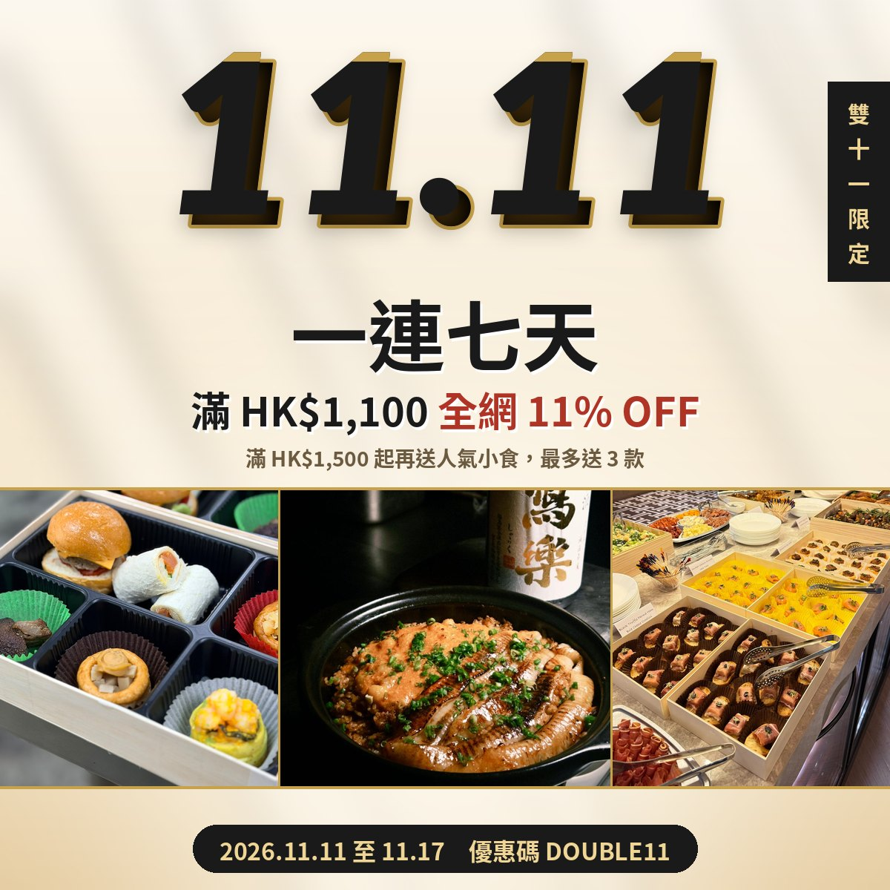
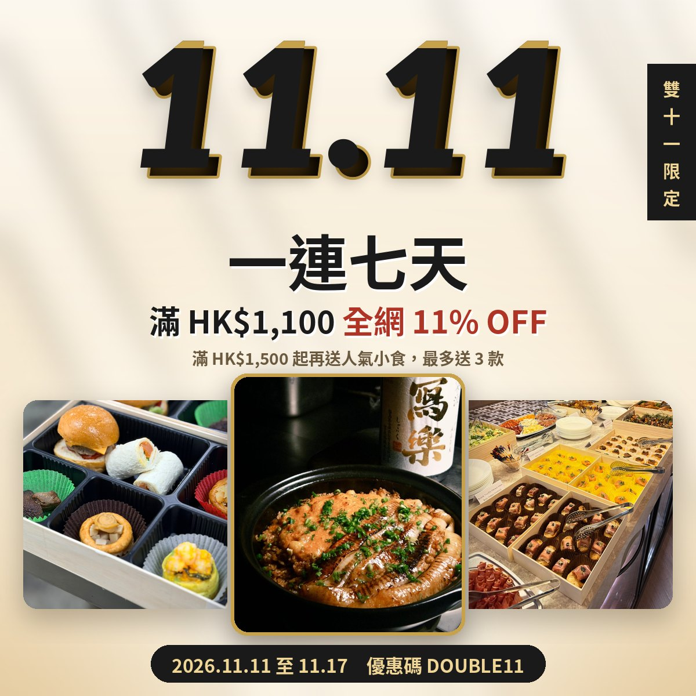
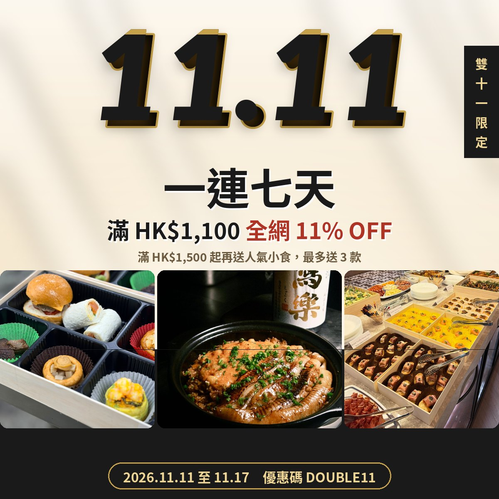

已移除相片名稱及按鈕「🔥」。文字內容不變。設計參考 Four Seasons Sydney 的留白及層次。
三張相無縫連成一條，貼滿左右，只用兩條金色直線分隔，上下金線收邊，冇漸黑。白色區：黑底金線，金色實心按鈕。最簡潔、最有氣勢。

多謝你一直支持 Kitchen AO。雙 11 一連七天，網站下單滿 HK$1,100，輸入優惠碼 DOUBLE11 即享全網 11% OFF；滿 HK$1,500 起更可額外獲贈人氣小食，會員優惠亦照常享用。
立即網站下單全景條左右留邊、圓角；中間煲仔飯加金框、比兩邊高，凸出條外，主角最突出。白色區：保持白底，金色短線，黑底金邊按鈕。最有層次。

多謝你一直支持 Kitchen AO。雙 11 一連七天，網站下單滿 HK$1,100，輸入優惠碼 DOUBLE11 即享全網 11% OFF；滿 HK$1,500 起更可額外獲贈人氣小食，會員優惠亦照常享用。
立即網站下單KV 下半部轉黑色，三張相跨過米色同黑色交界；膠囊改金框。白色區：同 KV 一樣黑色，無縫連接，金框按鈕。最有整體感、最高級。

多謝你一直支持 Kitchen AO。雙 11 一連七天，網站下單滿 HK$1,100，輸入優惠碼 DOUBLE11 即享全網 11% OFF；滿 HK$1,500 起更可額外獲贈人氣小食，會員優惠亦照常享用。
立即網站下單